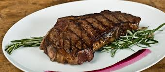

So this is my second html task
I'm meant to duplicate a page using my skills
Let's do this!!!!

I will be listing every meal I ate this weekend and my ratings on them
Some of the faboulous dishes are:
- Spur's Stake
- Mixed Rice
- Chicken strips
- Buttered buns
My ratings on each dish are as followed:
- The Spur's steak was by far the tastiest dish on this list. A complete 10 out of 10
- A mixture of jollof and fried rice. Amazing but nothing special. 7 out of 10
- Strips of chicken fried in a spicy sauce. Apart from being too spicy, it was delicious. 9/10
- Meant as an appetizer. Just a fancier form of bread and butter. 5 out of 10